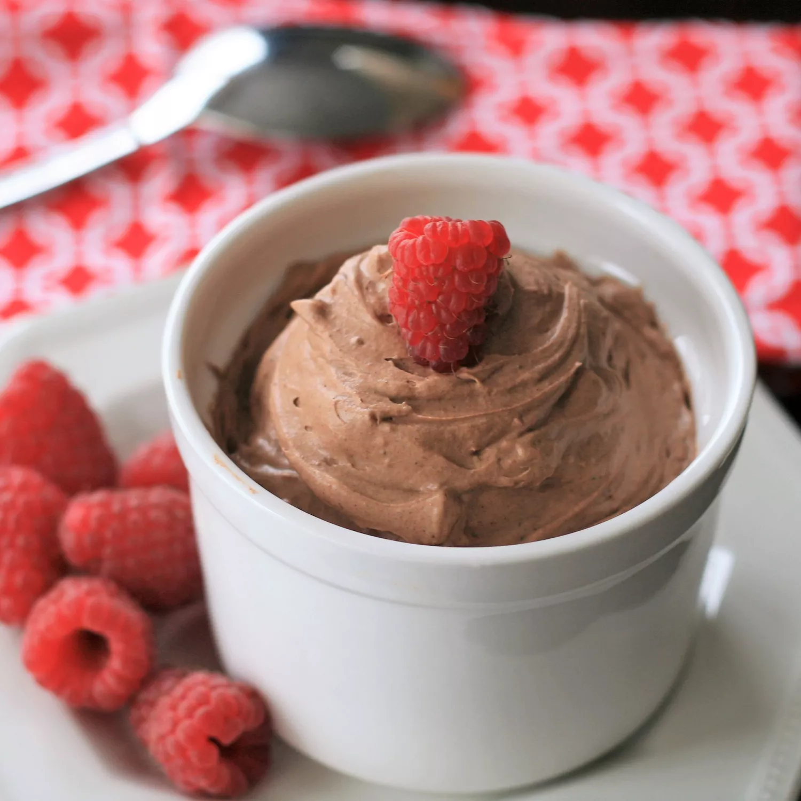

Quick Keto Chocolate Mousse

This keto chocolate mousse is ideal for satisfying a sweet tooth.
It's so fast that it'll be ready in no time.
There's no need to whip the heavy cream ahead of time;
simply combine everything in a mixing bowl and
combine!
Use any granular keto-friendly sweetener that measures like sugar.
Swerve powder dissolves
better for me than Swerve liquid.
Adjust the cocoa powder and sweetener amounts to your liking.
Because this is quite rich, you don't need much to feel satisfied.
Ingredients:
- 3 ounces cream cheese, softened
- ½ cup heavy cream
- 1 teaspoon vanilla extract
- ¼ cup powdered zero-calorie sweetener (such as Swerve®)
- 2 tablespoons cocoa powder
- 1 pinch salt
Steps:
- Beat cream cheese in a large bowl with an electric mixer until light and fluffy. Turn mixer to low speed and slowly mix in heavy cream and vanilla.
- Mix in sweetener, cocoa powder and salt until well incorporated. Turn mixer to high and mix until light and fluffy, 1 to 2 minutes more.
- Serve immediately, or refrigerate for later. Enjoy!